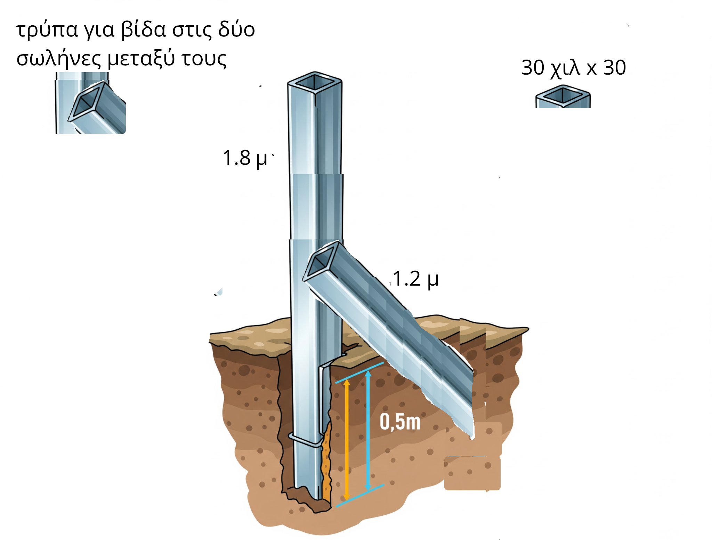

Σχέδια
HOME
Table of Contents
Χριστίνα
Αρχική Κάτοψη

Λάστιχα

Ιωάννα
Αρχική Κάτοψη

Λάστιχα

Στηρίγματα
Δύο σωλήνες τετράγωνες, 30 χιλ με 30 χιλ, η μία πρέπει να μπει διαγώνια και να βιδωθεί στην κάθετη για κόντρα. Η κάθετη σωλήνα 2.30 μέτρα, η διαγώνια 1.2.
Η διαγώνια πρέπει να έχει μία τρύπα στην κορφή για να βιδωθεί στην κάθετη, και η κάθετη μία τρύπα περίπου στα 1.2 μέτρα απο κάτω 
Πρέπει να κοπεί ένα μικρό κομματάκι ως κορφή για κρατάει τα λάστιχα, χούφτα, 1.5 εκατοστά, και στο κάτω μέρος να κοπούν οι δύο πλευρές, και οι άλλες δύο που θα μείνουν θα στραβώσουν λίγο ώστε να τοποθετηθεί στην κορφή της κάθετης σωλήνας αφού χτυπηθεί και μπει στο έδαφος. Οι δύο πλευρές, τα αυτιά που θα μείνουν, θα πρέπει να λειανθούν ώστε να μην κόψουν τα λάστιχα, και στο κάτω μέρος, να μπει ένα κομματάκι τσίγγου ως Π, για να είναι λείο επίσης.

Ηλεκτρολόγος
2 Ηλεκτροβάνες, 1 μία στην γεώτρηση, Η άλλη παραδίπλα. Ρεύμα δεν υπάρχει για την δεύτερη ηλεκτροβάνα, θα πρέπει να επεκταθεί το ηλεκτρικό δίκτυο.
Γιώργος
Αρχική Κάτοψη
Λάστιχα